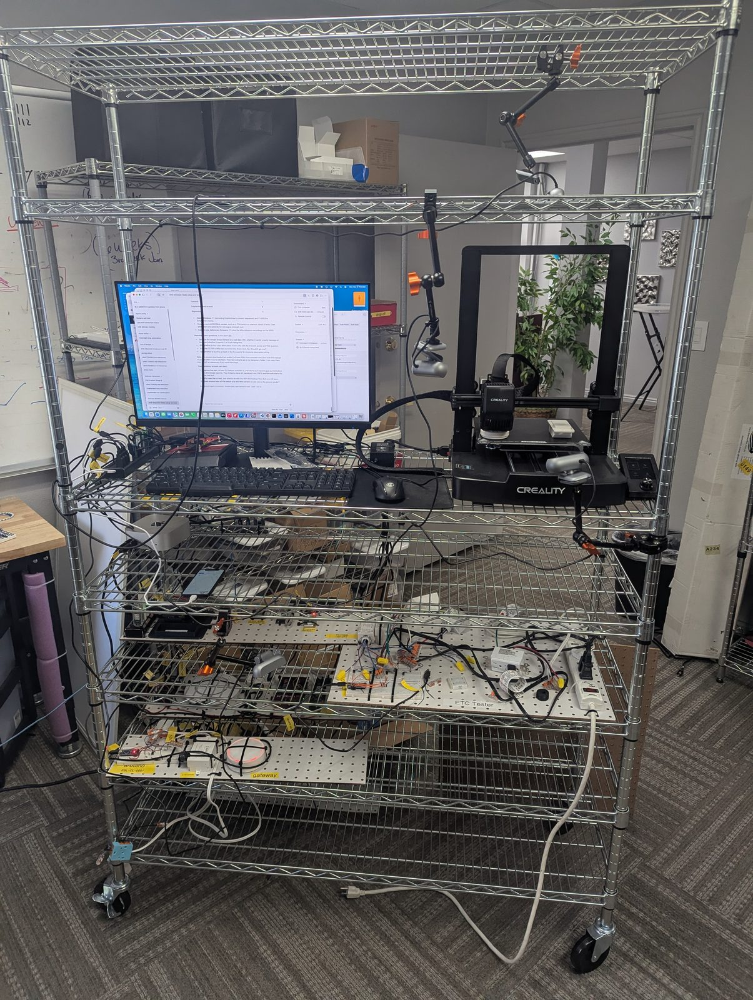
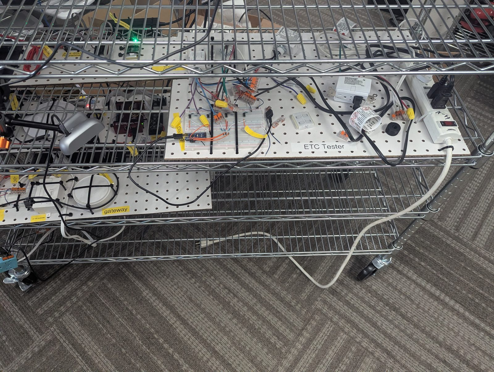

Phil is an AI agent with a body. The cart holds a computer running Claude, cameras so he can see, and programmers, radios and I/O boards so he can wire up, flash and test real hardware with as little human help as possible. Every part is grouped by the job it does for him.
Tap a number on a photo, or a part in the list, to find it. Tap a role above to show only those parts.
Front view of Phil, top shelf to casters.

Articulating "magic arm" (orange locking knobs) clamped to the top shelf, holding small USB cameras that look down over the desk and printer.
Second magic arm hanging from the shelf with two webcams. Gives Phil a view of the work surface and the printer bed.
Acer monitor showing the Claude desktop app on macOS. The open sessions are Phil's projects (EnOcean 902 MHz module, CC1310 sniffer, BLE switch OTA from phone, LabJack status, unattended-loop runs).
For people to step in. Day to day, Phil works through the computer without them.
Multi-port hub with yellow-tagged cables. Fans the computer out to the programmers, cameras and boards on the shelves below.
A red development board sitting on a black enclosure, connected by USB. Not labeled in the photo; confirm what it is.
Creality bed-slinger (looks like an Ender-3 V3 series) with a knob-and-screen controller. A small white printed box sits on the bed.
Webcam on a short arm aimed at the print bed so Phil can watch prints and catch failures.
Phil's computer. Runs Claude Code and every tool that talks to the hardware.
Smartphone plugged in over USB, used to test phone apps such as BLE switch updates sent from a phone.
Pegboard with the debug programmers and radio tools. See the close-up photo, items 19 to 24.
Webcam on a magic arm pointed at the boards so Phil can read LEDs and check status.
Pegboard test fixture: an Arduino-driven breadboard wired to mains and 0-10 V lighting circuits. See the close-up, items 27 to 33.
Prime surge-protected power strip with a lighted switch. Feeds the test panels.
Bottom pegboard with a wireless lighting gateway (red ring light), a 0-10 V controller and a breadboard.
Small red Arduino-style board on a breadboard, labeled arduino EBL-CL-0001. Switches or simulates inputs for the gateway panel.
White cord that powers the whole cart. In these photos the plug is lying on the floor, not in the wall.
Chrome wire shelving rack on locking wheels, so Phil can be rolled to wherever the work is.
Looking down at the programmer panel, the ETC Tester and the gateway panel.

Labeled "J-Link-EDU Programmer". Debug probe for flashing and debugging ARM microcontrollers.
Black USB device labeled "EnOcean Bridge". Lets the computer send and receive EnOcean wireless telegrams.
Small board with a green LED, labeled TI CC1310. Sub-GHz radio used as a sniffer to capture 902 MHz traffic.
White ILLUMRA lighting-control module (an EnOcean-based product line) wired into the test circuits.
White stick with the ST logo and a red LED. Programs and debugs STM32 microcontrollers.
Red USB data-acquisition box. Gives Phil analog and digital I/O to measure voltages and toggle signals.
Round white puck under the camera, similar in style to the gateway. Confirm whether it is a sensor or a second gateway.
Same camera as item 12, on its magic arm with an orange clamp knob.
Blue Arduino Nano connected to the Mac by USB. The tester's controller: Phil sends it commands and it drives the channels next to it.
Breadboard with four small three-pin parts and resistors, likely transistor or optocoupler stages that let the Nano switch the circuits under test.
Orange WAGO-style lever connectors and yellow wire nuts join the panel's wires without soldering, so Phil can rewire quickly.
Purple and gray pair printed "CONTROL 0-10V". The standard dimming signal used by commercial lighting.
White outlet with an FCC ID label and screw terminals: a connected (wireless) receptacle being tested. A cord is plugged in as its load.
Small white module with four button pads. Looks like an EnOcean PTM-style self-powered switch used as a wireless sender.
Round black core next to the wiring. Likely a ferrite or current-sense ring; confirm.
White box labeled "0-10v controller". Turns wireless commands into a 0-10 V dimming signal.
Round white wireless lighting gateway held down with cable ties. It shows a red ring light when powered.
The end of the main power cord (item 17) lying on the floor.